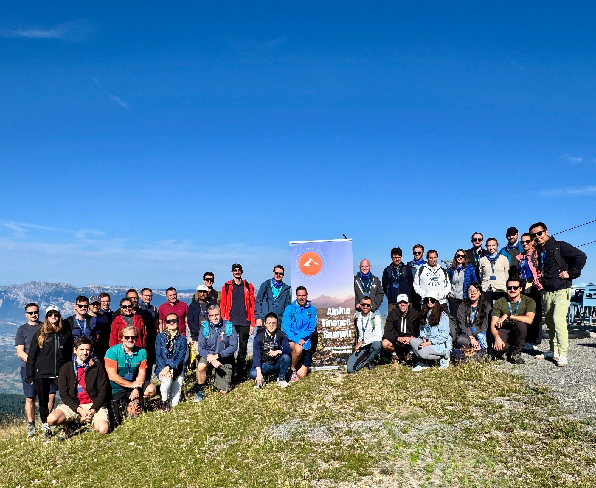

AFS 2026 · August 23–25
Conference Program
Three days of paper sessions, discussions and keynotes in Garmisch-Partenkirchen — with day two held at the Kreuzjochhaus mountain hut.
Day 1
Sunday, August 23 Kongresshaus Garmisch-Partenkirchen- 08:30 – 08:40Greetings
- 08:40 – 09:20“A Transaction Cost Perspective on Option Anomalies”Discussant: Ilias Filippou
- 09:20 – 10:00“Forecast Agnostic Portfolios”Discussant: Petra Sinagl
- 10:00 – 10:40Coffee Break & Poster Session
- 10:40 – 11:20“Hard to Process: Atypical Firms and the Cross-Section of Expected Returns”Discussant: Esad Smajlbegovic
- 11:20 – 12:00“Dealer Vanna and Event-Window Price Pressure”Discussant: Julian Thimme
- 12:00 – 13:30Lunch Break
- 13:30 – 14:10“Advising the Advisors: Evidence from ETFs”Discussant: Anna Helmke
- 14:10 – 14:50“Dinner Table Alphas”Discussant: Juha Joenväärä
- 14:50 – 15:30Coffee Break & Poster Session
- 15:30 – 16:10“The Impact of Active Managers on the Pricing of Underlying Assets in ETFs”Discussant: Thomas Marta
- 16:10 – 16:30Break & Poster Session
- 16:30 – 18:00KeynoteAlpine Keynote: “Ambition to Peak”
Day 2
Monday, August 24 Kreuzjochhaus, Garmisch-Partenkirchen- 09:20 – 09:30Greetings
- 09:30 – 10:10“Time-Series Momentum across the Capital Structure”Discussant: Adam Upenieks
- 10:10 – 10:50“Complexity Breaks Arbitrage Pricing Theory”Discussant: Jeremias Huber
- 10:50 – 11:20Coffee Break
- 11:20 – 12:00“Persistent Anomalies and Nonstandard Sharpe Ratios”Discussant: Stefan Voigt
- 12:00 – 13:20Lunch Break
- 13:20 – 14:00“The Golden CAPM”Discussant: Christian Wagner
- 14:00 – 14:40“Are New Technologies Replacing the Information Produced by Financial Markets?”Discussant: David Streich
- 14:40 – 15:10Coffee Break
- 15:10 – 16:30KeynoteAcademic Keynote: “Investment Advisors, Fund Managers, Incentives and Effort”
Day 3
Tuesday, August 25 Kongresshaus Garmisch-Partenkirchen- 08:10 – 08:20Greetings
- 08:20 – 09:00“Doing Good by Doing Nothing? Passive Ownership and Environmental Performance”Discussant: Marco Ceccarelli
- 09:00 – 09:40“Green Waste”Discussant: Karoline Bax
- 09:40 – 10:00Coffee Break
- 10:00 – 10:40“Does the Media Time Corporate News? Evidence and Financial Market Effects”Discussant: Julia Meyer
Academic keynote speaker
Richard B. Evans
C. Stewart Sheppard Professor of Business Administration at University of Virginia’s Darden School of Business.
He received his Ph.D. in Finance from the Wharton School, University of Pennsylvania. Richard’s research interests focus on asset pricing and investments. He has published in the leading finance journals such as the Journal of Finance, the Review of Financial Studies, and the Journal of Financial Economics.
Faculty profile